なんばソトフェスとは？
緑豊かな商業施設「なんばパークス」を舞台に開催される“都市型アウトドアフェス”。5年目となる今年は、全国のアウトドアブランドが集結し、キャンプやフィッシング、トレッキングなどさまざまなアクティビティを彩るアイテムが勢ぞろい！ワークショップやソト遊び体験も盛りだくさん！！子どもから大人まで、見て、触れて、体験して楽しめる2日間。
都会の真ん中でアウトドアの魅力を満喫しよう！
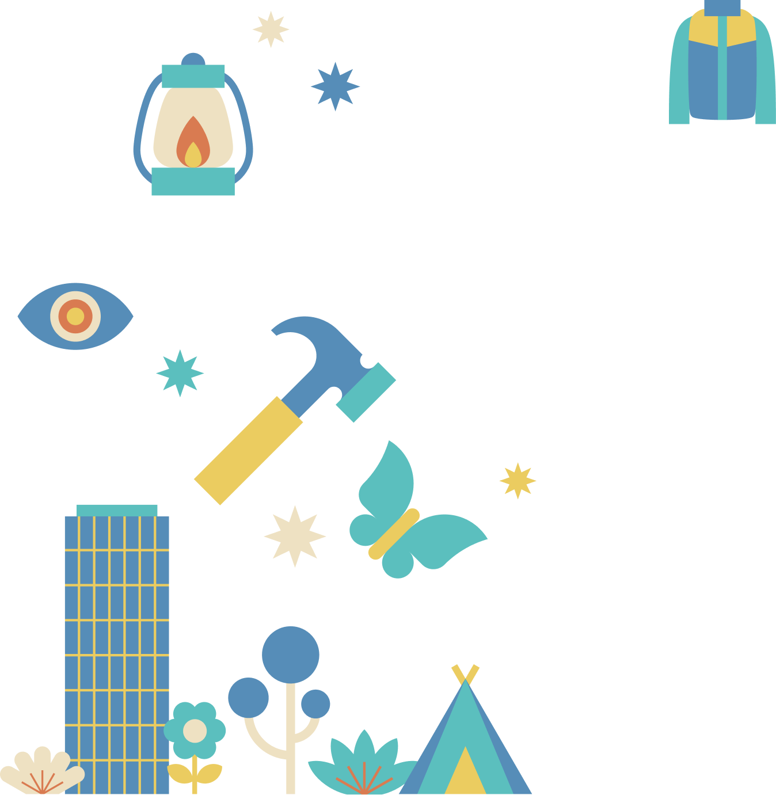
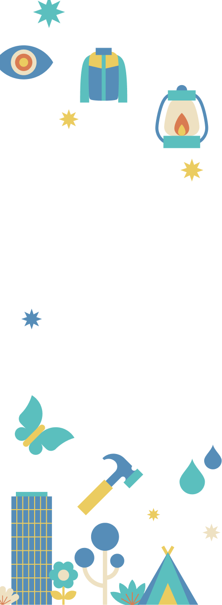
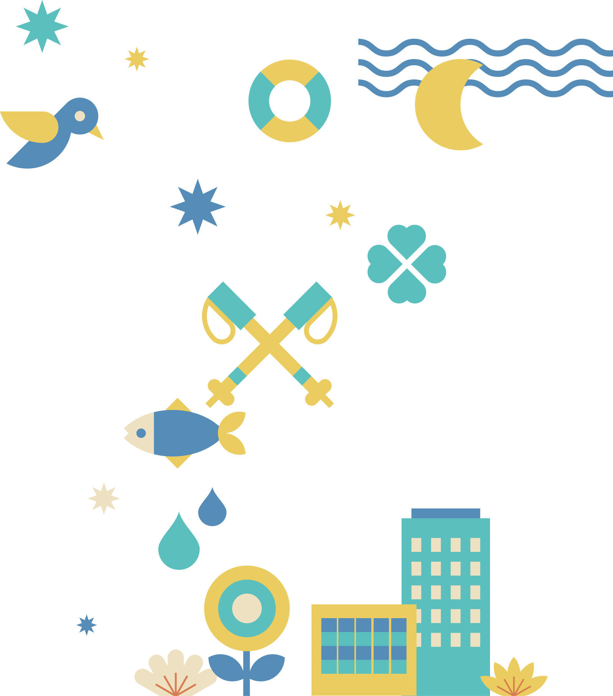
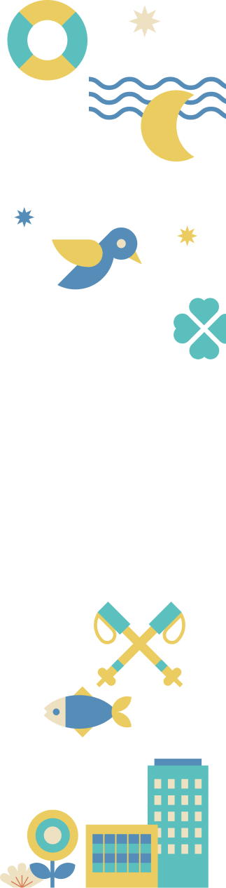
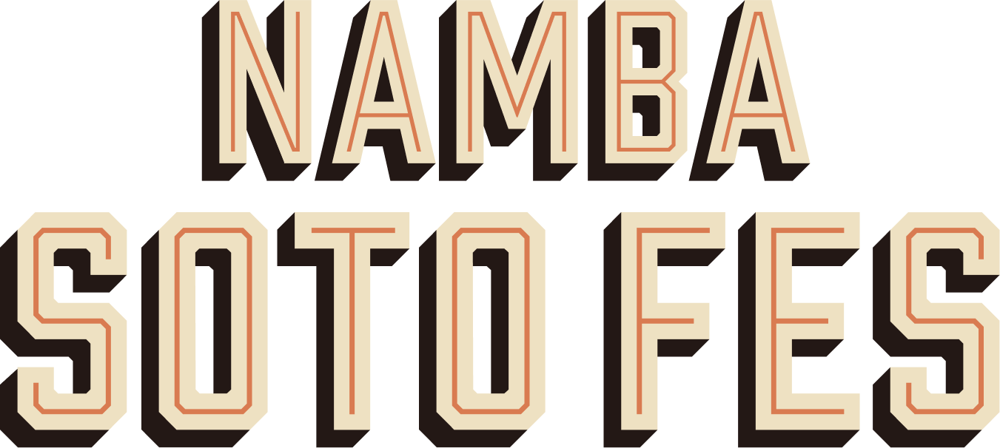
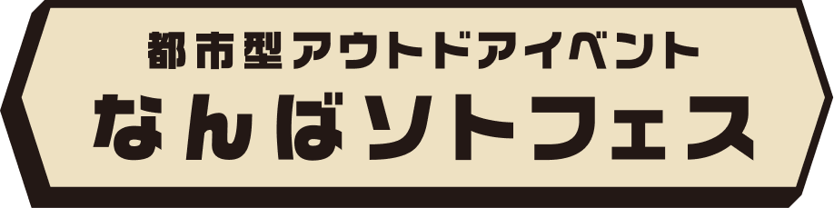
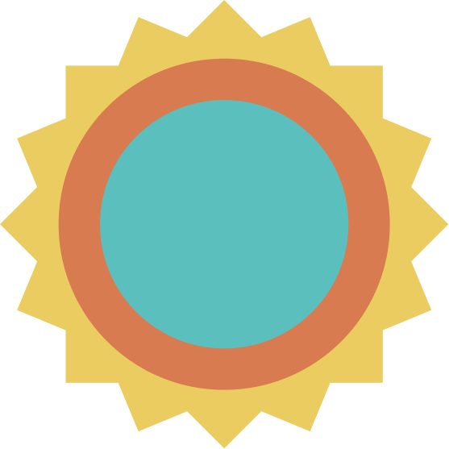
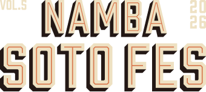
なんばソトフェスとは？
緑豊かな商業施設「なんばパークス」を舞台に開催される“都市型アウトドアフェス”。5年目となる今年は、全国のアウトドアブランドが集結し、キャンプやフィッシング、トレッキングなどさまざまなアクティビティを彩るアイテムが勢ぞろい！ワークショップやソト遊び体験も盛りだくさん！！子どもから大人まで、見て、触れて、体験して楽しめる2日間。
都会の真ん中でアウトドアの魅力を満喫しよう！
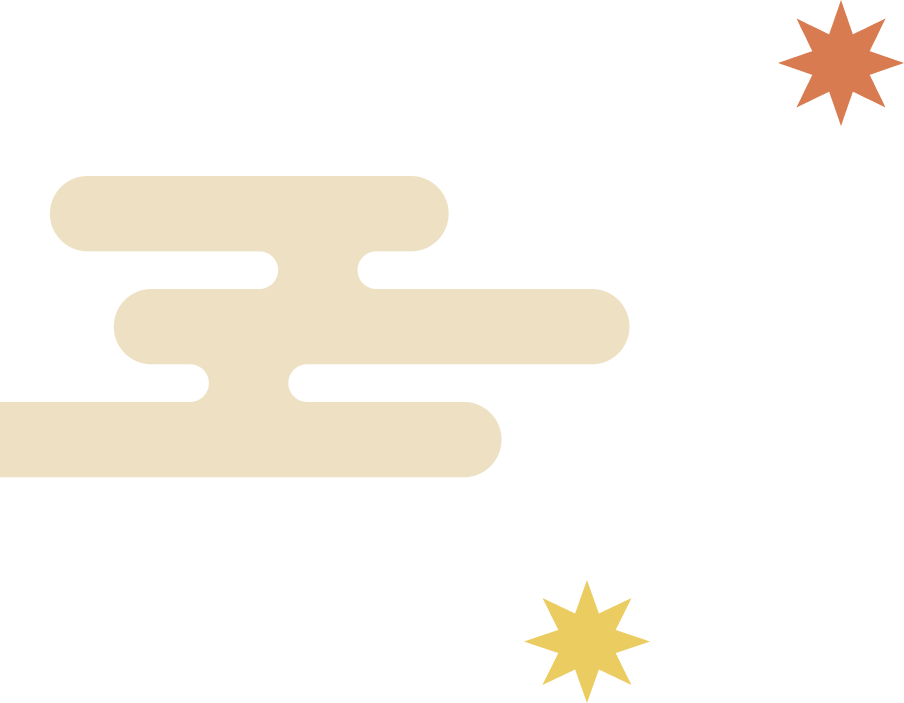
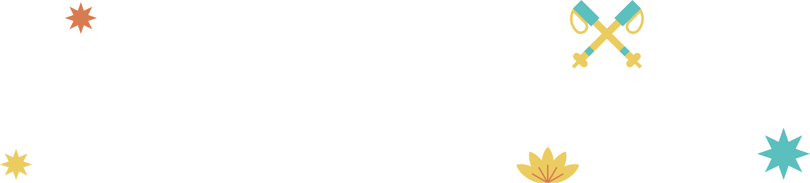
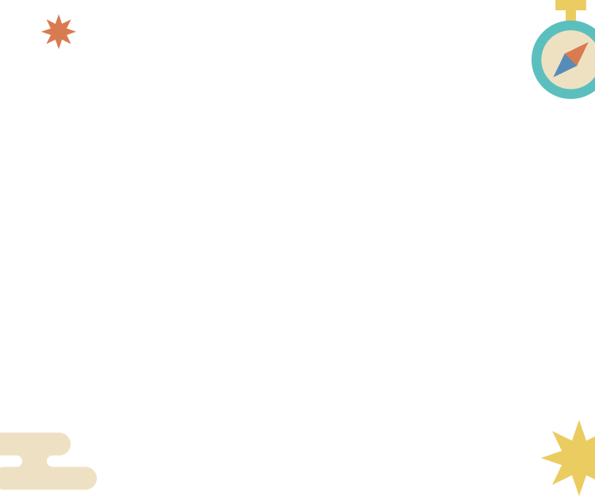
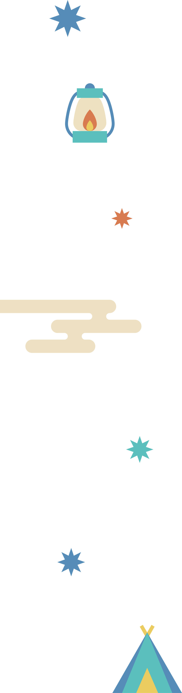
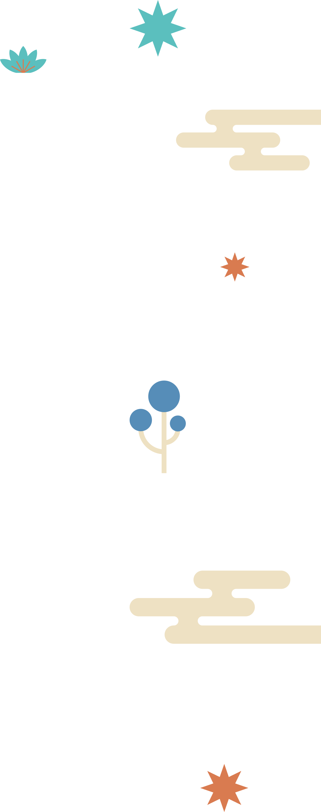
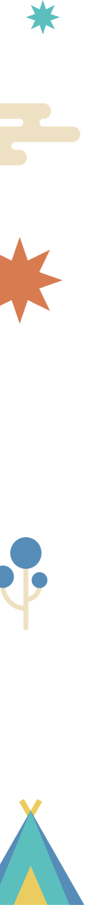
10/31(土)〜11/1(日)11:00～17:00
1F なんばカーニバルモール
なんばパークスやなんばCITYのテナントであるアウトドアショップと全国各地のアウトドアブランド・ショップが大集結！
今年はアウトドアギアやアパレルに加え、フィッシングやトレッキングなど多彩なブランドが出展！ クリック・タップで、出展内容をチェック！
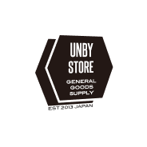
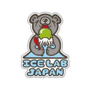
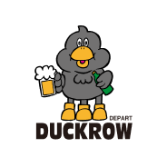
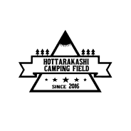
and more...
AlpenOutdoors
関西最大級の品揃えを誇る体験型アウトドアショップ。テントの試し張りスペースや、各種アウトドアアパレル、トレッキングギアをご用意しています。
Instagram : @alpen.outdoors.nambaparks
https://www.alpen-group.jp/product/alpenoutdoors/
A＆F COUNTRY
世界のアウトドアブランドを販売しており、"良いものを永く"というコンセプトを基に商品を品ぞろえしたアウトドアセレクトショップです。また「SABBATICAL」というオリジナルブランドも展開しています。
Instagram : @aandfcountry_nambaparks
https://aandf.co.jp/
OUTDOOR SHOP Orange
「Orange」の人気アイテムの別注焚火ダウン、オーロラダウンを筆頭にオリジナルアイテムを展開。これからのキャンプシーズンに大活躍のアイテムをご用意しております。
Instagram : @orange_outdoor_shop_nambaparks
https://shop-orange.info/
BEAVER
アウトドア、スポーツ、ミリタリーなど様々なジャンルにおける本物の逸品を世界中からセレクトし新しいカジュアルスタイルを生み出すSHOPです。
Instagram : @beaver__official
https://mix.tokyo/pages/beaver
WOODY HOUSE
京都北部を中心に展開するセレクトショップ。ファッションからアウトドアまで、毎日を彩るアイテムを提案します。
Instagram : @woodyhouse_namba
https://woodyhouse.shop/
ASOMATOUS
京都笠置発のライフスタイルブランド。「思いつきを形に」をコンセプトにした商品を販売。イベント当日は、ブースにてGoal Zero製品の販売とワークショップならびに、着物を使ったアップサイクルワークショップを実施予定。
Instagram : @asoma_tous
https://asomatous.jp/
WOOD and WOOD
【ワークショップ】
・WOODキーホルダー(木磨き&色塗り)
・ルームミラーWOODアクセサリー(木磨き&オイル仕上げ)
・WOODアートパネル子どもから大人まで楽しめるワークショップ
をはじめ、「Wood and Wood」こだわりの木製品と一枚板の販売とアイデアがつまったイベント出店用木製什器(看板、マルシェ台など)の展示をします。
Instagram : @wood_and_wood.official
https://woodandwood.stores.jp/
KAKURI
ものづくりの街・新潟県三条市よりこれまで培ってきたモノづくりネットワークを活かし、アウトドアがもっと楽しくなるような道具を提供しています。当日はお得なアウトレット品も多数取り揃えてお待ちしております。その他にも様々な商品をご覧いただけますので是非ご来場ください！
Instagram : @kakuri_outdoor
https://www.kakuri.co.jp/
9w.
「9w.(クオウ)」はIH鍋のパイオニア、株式会社フジノスのアウトドアブランドです。当日はイベント限定品を含めた商品の展示販売、フジノスの新製品の展示販売、SNSフォローで粗品をプレゼントします。
Instagram : @9w._official
https://www.fujinos.co.jp/item/9w
COBMASTER
1971年イギリス生まれのアウトドアブランド「COBMASTER」。バックパックを背負った熊のロゴがトレードマーク。快適な外遊び＝レジャーを提案するため、アウトドアにまつわる様々なアイテムを販売いたします。
Instagram : @cobmaster.jp
https://cobmaster.jp/
GOALZERO
2008年に米国ユタ州で設立されたGoal Zero社は、携帯用太陽光発電メーカーのリーダーです。高性能かつポータブルで拡張性が高いソーラー発電システムを、アウトドア、防災、BCPに最適な製品を開発・提供しております。
Instagram : @goalzero_japan
https://goalzero-jp.com
SABBATICAL
「SABBATICAL」のテーマは「地球の道具」。自然のなかで道具を通して学び、道具と共に成長していけるような、人と道具の関わりを作り続けていきたいと考えます。けっしてラグジュアリーなハイエンドに偏ることなく、品質、機能性、デザイン、そして価格という四拍子がバランスよく揃ったプロダクツを作り、誰もが良いと思える商品としてバランスの取れた価格でお届けしたい、そんな思いが詰まったブランドです。
Instagram :
@sabbatical_jp
https://sabbatical.jp/
DUCKROW DEPART
のんだくれ八咫烏ダックローが館長を勤める架空のデパートメントストア。各階テーマに分かれたダックローの素敵なアイテムを展開。イベントではアイテムの販売とゲームセンターコーナーでお客様のご来店お待ちしております。
Instagram : @duckrow_depart
https://shop.duckrow-depart.com/
Danner
アメリカ生まれのアウトドアブーツブランド「Danner」。MADE IN USAの商品からライトなシューズまで幅広くラインナップ。「Danner」の靴、アクセサリーを一部特別価格で展開。
Instagram : @danner_jp
https://jp.danner.com/
tempra GARAGE
オリジナルの商品を中心に、すでに売り切れてしまっているものや、先行で販売する新作なども販売予定です。よろしくお願いします。
Instagram : @tempra_cycle
https://tempragarage.com/
NEVER WASTED
無駄なモノは作りたくない。買っていただいた後も無駄な買い物だったと思わせたくない。何年も使ってもらいたい。そんな思いで立ち上がったブランドです。今季はtrip a landをテーマに日常～旅で役立つアイテムを提案。
Instagram : @never_wasted_official
NORAs
キャンプから本格的な登山までこよなく愛すブランド「NORAs」。KASIAが細部にまでこだわって『自分が欲しいと思うギア』を製作。4000m級以上の山でもカジュアルなデイキャンプでも、ずっと使い続けられるギアを今後も展開していく。
Instagram : @noras.jp
https://noras.jp/home
HALFTRACK PRODUCTS
独創的なアイディアで、ありそうで無かった、あったらいいな、を提案し、アウトドア小物、日常でも使えるグッズ、アパレルなど幅広く展開。そのアイテム群にはエンドユーザーのみならず業界内からのファンも多い。
Instagram : @halftrackproducts
https://halftrack.stores.jp/
PARA-SOL MARKET
「創る」楽しさを多くの方に伝えるブランドです。全国各地に出向き多くの方へ「ワクワク」するモノ作りや様々な商品をご提供しています。今回、ワークショップと併せて、数量限定とはなりますがPARA-SOL MARKET関連商品もお持ちしますので皆様！ お待ちしています!
Instagram : @parasol_market
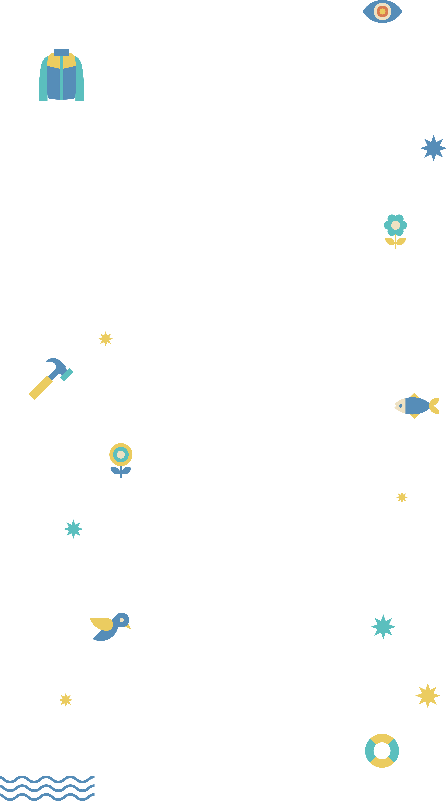
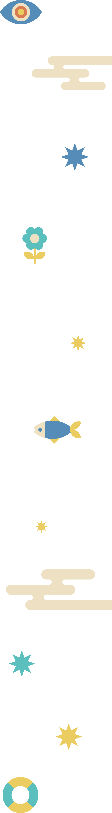
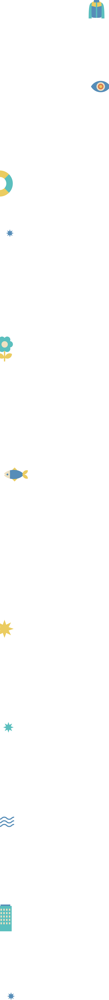
HOUYHNHNM（フイナム）
東京発の人気WEBマガジン『HOUYHNHNM』が
なんばソトフェスを盛り上げる！

世の中にあふれる情報のなかから、ヒップなヒト、モノ、コトを見つけ、編集し、届けているWEBマガジン。「Magazine for the Hip」をテーマに、ファッションやカルチャー、ライフスタイルまで幅広く発信しています。
Instagram : @houyhnhnm_officail
https://www.houyhnhnm.jp/
親交のあるブランドや
ショップとの
コラボグッズを特別販売！
フイナムが親交のあるブランドやショップとこれまでつくってきたコラボアイテムを販売します。直近でつくった以下の4つのコラボアイテムに加え、「the Apartment」や「CITY COUNTRY CITY」など、ここには載っていないアイテムも多数用意しています。普段はオンラインでのみの販売ですが、実際に手に取っていただける貴重な機会です！
FreshService
（フレッシュサービス）
ディレクターの南貴之さんが世界中で作られているものを独自の視点で再構築し、新たな製品として提案しているブランド。日用品から、ユニフォームやワークウエアをイメージした衣服まで、手に取るひとのライフスタイルを豊かにするアイテムを展開しています。
Instagram: ＠freshservice_official
https://freshservice.jp/
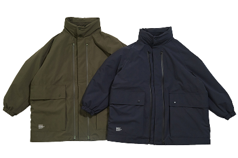
UTILITY SHOOTING COAT
¥57,200
“編集者のためのユニフォーム”をコンセプトに「FreshService」と製作したコート。外側に大きなポケットと内側に豊富な小分けのポケットを備えているから、外出時に必要なものを存分に収納できます。中綿入りで防寒性が高く、秋冬のキャンプや釣りにもぴったり。表地には撥水性を備えた3レイヤー素材「WEATHER SHIELD」を採用しているから、襟に収納されたフードを被れば軽い雨を凌げる優れものです。
山荘飯島
経堂のすずらん通り商店街を抜けた先に軒を構えるセレクトショップ。日常で着られるファッション性と、本格的なアウトドアシーンでも活躍する機能性を備えたアイテムを取り揃え、山と日常をシームレスに繋ぐ提案をしています。
instagram: @sanso_iijima
https://sanso-iijima.com/
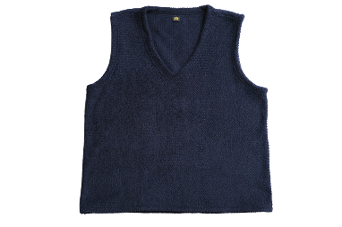
ミーティングベスト
¥19,800
アウトドアでもビジネスシーンでも、どんなときも着られる万能な服が欲しいというフイナム編集部の想いから生まれたニットベスト。素材には通気性と保温性に優れるポーラーテック アルファ ダイレクトを採用し、〈山荘飯島〉が絶大な信頼を寄せる大手ブランドなどを手がける日本の工場で製造されてます。シルエットの参考にしたのは王道のトラッドスタイル。裾にドローコードを配すこと好みの丈感に調整できる仕様に。シンプルなデザインだから、山、街、ビジネスなど、あらゆるシーンやスタイリングになじみます。
rajabrooke
（ラジャブルック）
デザイナーが12年間過ごした東南アジアの文化と、日本人としての感性と音楽などのカルチャーを独自の感性でミックスしている日本発のブランド。ブランド名は、かつて昆虫コレクターが夢中になって追いかけたマレーシアの国蝶に由来。
instagram: @rajabrooke_asia
https://www.rajabrooke.jp/
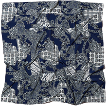
編集者の風呂敷
¥11,000
“フイナムが考える『編集者の◯◯』”というテーマのもと、「rajabrooke」と一緒につくった超撥水風呂敷。バケツのように水を汲める強力な撥水加工が施されていて、荷物をくるんで背負ったり差し入れを包んで持ったり、雨が降ってきたら頭やバッグにサッと巻くこともできる便利アイテムです。カラーはネイビー×オフホワイト。個性的なアジアンバティック柄がコーディネートのアクセントとしても一役買ってくれます。アウトドアシーンで濡れたチェアや地面に座るときにも活躍すること間違いなし。
制作ストーリーはこちら、使用シーンのイメージはこちらから。
ZEPTEPI
（ゼプテピ）
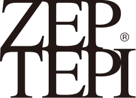
2011年にスタート。ダイニーマ®などの高機能素材を使ったバッグや、ミリタリーをサンプリングしたアイテムなどをリリースしています。これまでに「WTAPS®」「UNDERCOVER」「ALWAYTH」とのコラボも。
instagram: @_zeptepi_
https://www.zeptepiandco.com/
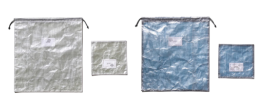
編集者のバッグインバッグ＆名刺入れセット
¥7,700
“フイナムが考える『編集者の◯◯』”というテーマのもと、「ZEPTEPI」と一緒につくったバッグインバッグと名刺入れのセット。素材にダイニーマ®を使用することでスタイリッシュな見た目に。もちろん軽さと耐久性も抜群です。サイズも数センチ単位でこだわり使いやすさを追求。カラーはホワイト×O.D.とブルー×ブラックのツートーン。ちょっと透け感があるので中身がわかるのもポイントです。アウトドアの際に、財布代わりにしたり、濡らしたくない小物をまとめておくのにもGOOD。
制作ストーリーはこちら、使用シーンのイメージはこちらから。
豪華ゲストによる
ポップアップ！
グループランイベント開催！
フランス発「ACT Running」が
大阪・なんばに初登場！！
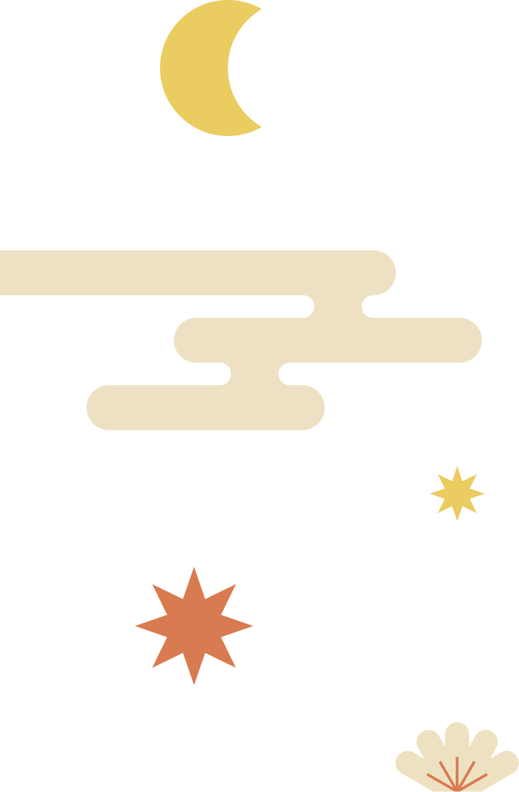
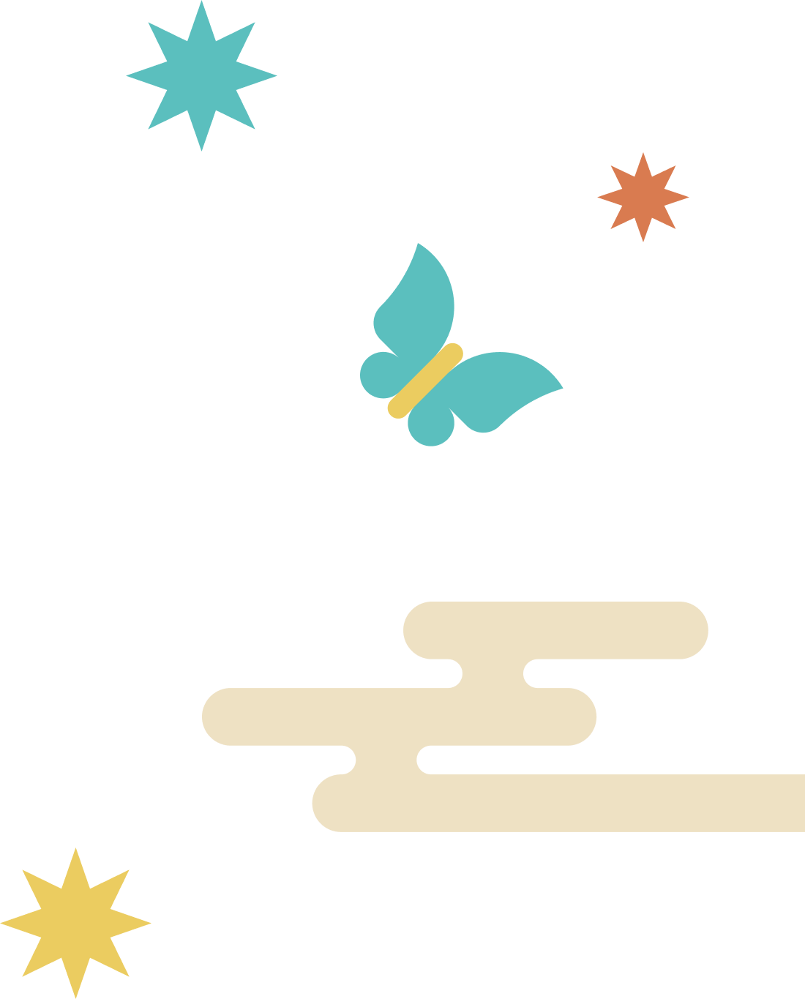
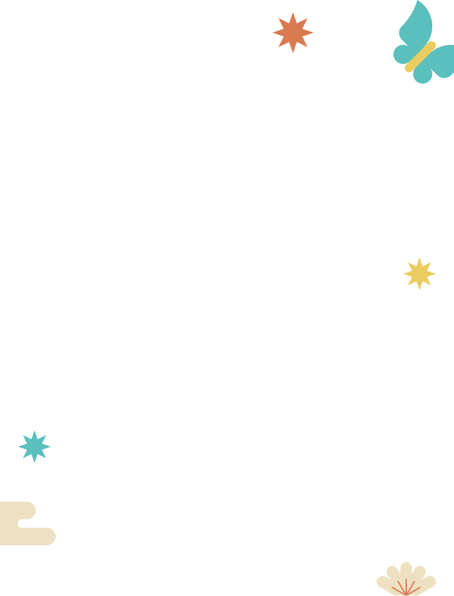
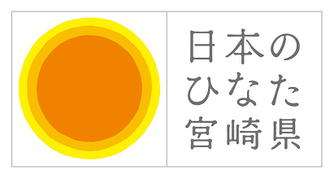
「宮崎県産乾しいたけ」が、なんばソトフェスに登場！
宮崎県は全国第二位の乾しいたけの産地です。なんばソトフェスでは、宮崎県産乾しいたけの魅力を"見て・食べて・体験できる"ブースをご用意しました。大人気の「乾しいたけ詰め放題」をはじめ、乾しいたけの旨味を楽しめる加工品販売や、だしの試飲・しいたけの魅力を学べる体験コーナーなど、ご家族で楽しめるコンテンツを多数実施します。宮崎県産乾しいたけが織りなす、新しい"UMAMI"をぜひご賞味ください。
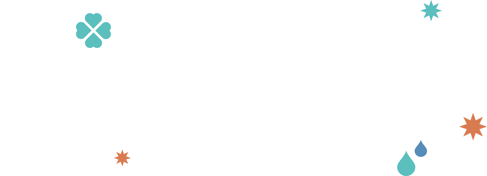
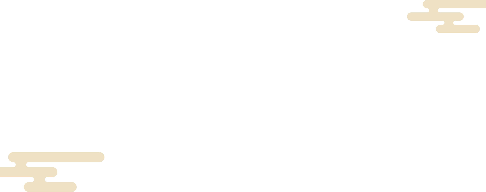
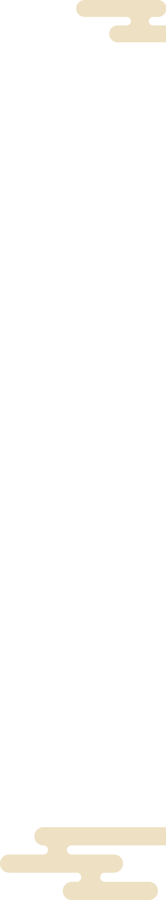
〒556-0011 大阪市浪速区難波中2-10-70

最寄り駅